- Gaming Artificial Anasazi -
Transforming an agent-based model in archaeology into immersive gameplay experiences
Andreas Angourakis @AndrosSpica & Shawn Graham @electricarchaeo
https://andros-spica.github.io/SSFest-Angourakis-Graham-2021/index.html?print-pdf (printable version)

|
|
I
Agent-based modelling
in archaeology
Agent-based modelling in Archaeology
 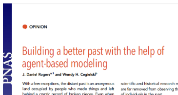
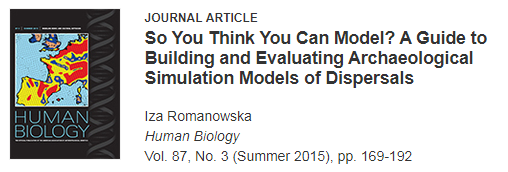
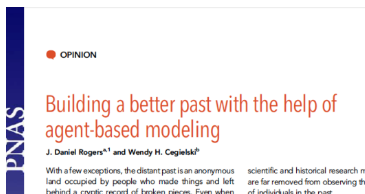
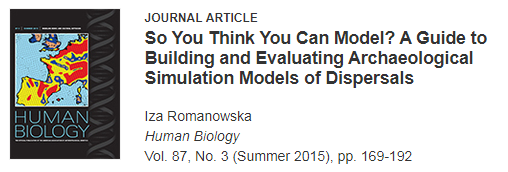
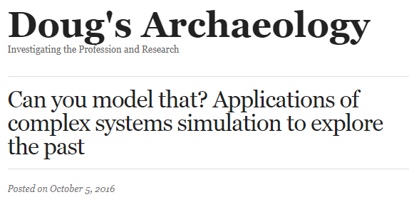 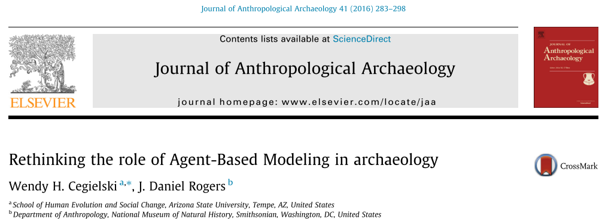
Many and very diverse applications
Big challenge
Complicated designs + lack of documentation
=

Articles are read, results interpreted...
but no one engages with the models
II
Gaming simulated pasts
Crossing paths with videogames
Simulation models as "games that play themselves"
What if...
people could play these ABM archaeological models?
Would that improve our understanding about models and case studies?
Interactive ABM
An example:

Schelling's Segregation model and
Parable of the Polygons
Interactive ABM
An "archeogame" example:


Sugarscape series and Evolving planet
Interactive ABM
Other archaeogames from the (indie) game industry:Ancient Cities (Uncasual Games)

Dawn of Man (Madruga Works)

III
Artificial Anasazi
Anasazi → Ancestral Puebloans


The Artificial Anasazi model was designed for exploring the relation of climate change and cultural collapse


IV
Gaming immersive ABM
What did we want?
- Agent-based model as game mechanics
- Turn the player into an agent
- 3D, first person, ideally VR-compatible
→ immersive, avoid god-like perspective - A game, but also a tool for communicating the model
How did we do it?
- Translate the model's code (replication)👍
- Complement/expand the model to fill gaps✌️
- Define and implement game mechanics🤔
- Bonus I: develop/import minimum artistic assets, including text🙄👾
- Bonus II: user interface, game save system,
and a great etc.😵
V
From NetLogo to Unity

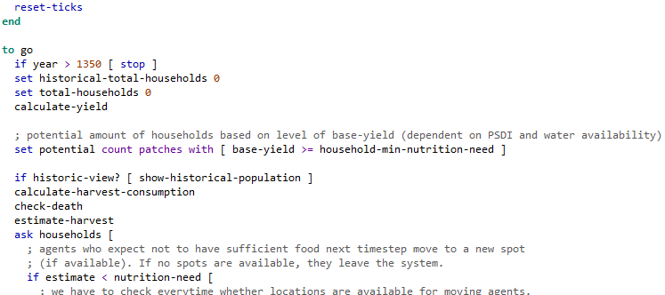 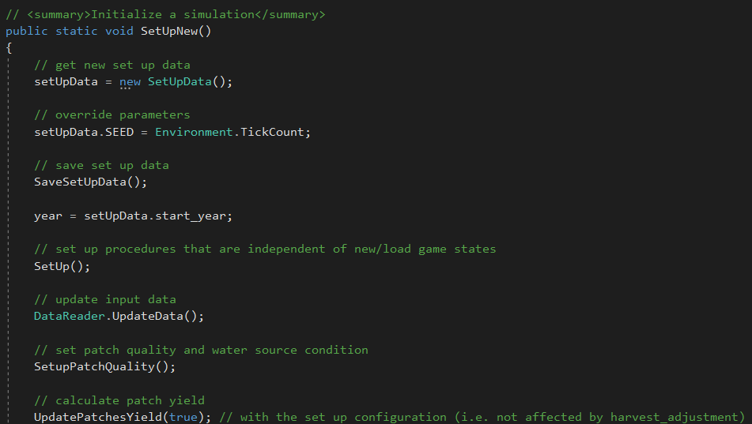
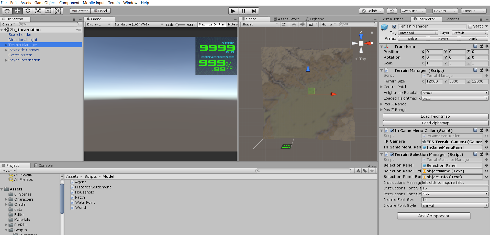
Importing real-world DEM
&
Matching 3D terrain with grid structure
Replication
More profound understanding of the model
Revealed problematic assumptions
and hard-to-spot mistakes.
→ a general problem of treating ABM as black box
* FAIL!😱 *
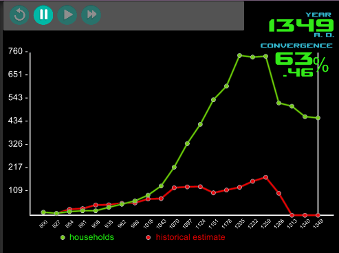
A corrected version that accounts for individuals within households
(parameters had to be "relaxed" for population to survive more than a few time steps)
VI
The Game
Game concept
The model's goal:
to understand the factors behind the collapse of the Ancestral Puebloans,
by running the model many times for different parameter settings
The game's goal:
to understand the factors behind the collapse of the Ancestral Puebloans,
by immersive exploration, discovery, and interaction with characters and the 3D environment
Prototype
*live demo*
or else see slides below (screenshots)


Dialogue with NPCs
changing the model's parameters and variablesTwine + Cradle
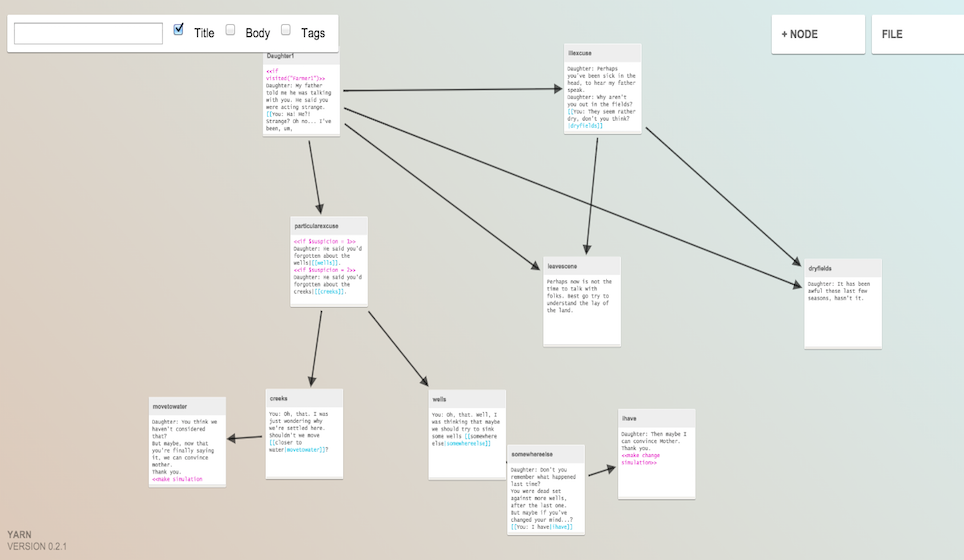
THANK YOU FOR YOUR ATTENTION!
Check development videos at YouTube playlistAndreas Angourakis @AndrosSpica & Shawn Graham @electricarchaeo
https://andros-spica.github.io/SSFest-Angourakis-Graham-2021/index.html?print-pdf (printable version)
|
|
|